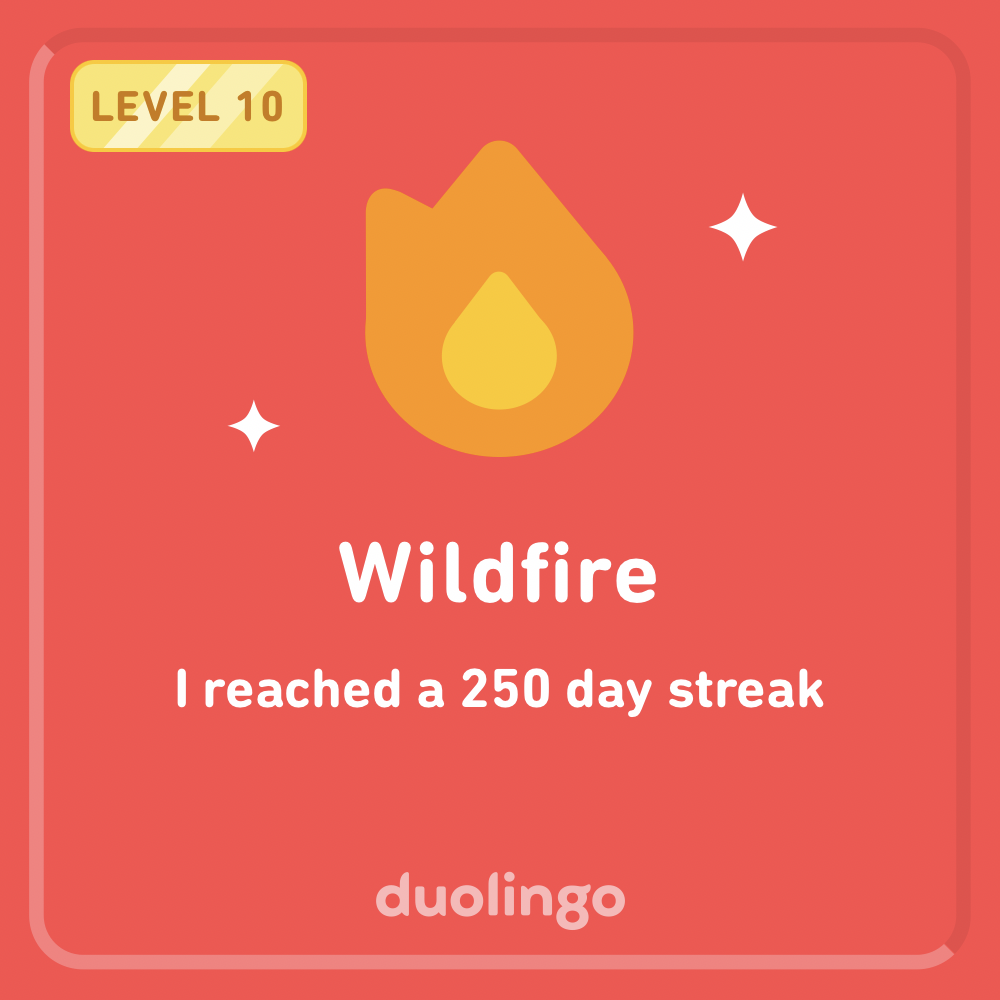
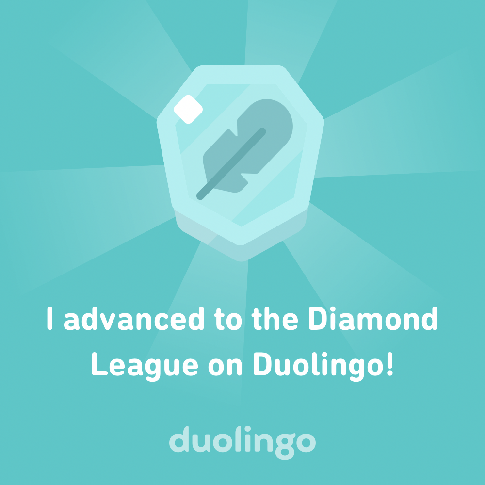
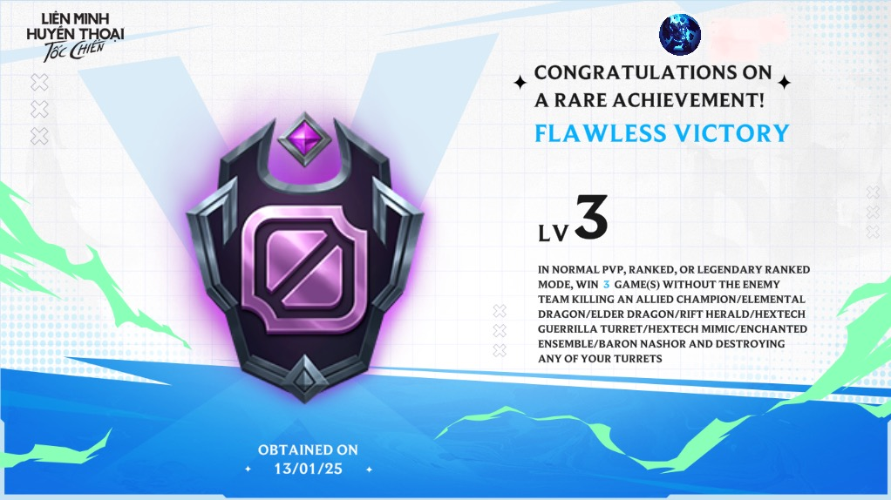
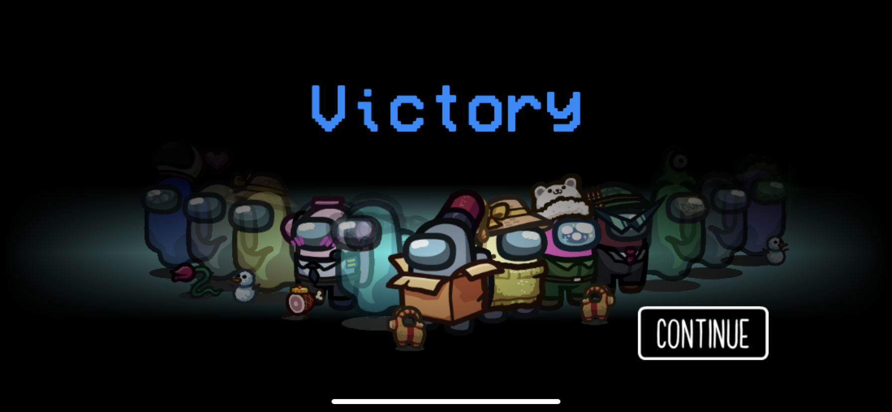
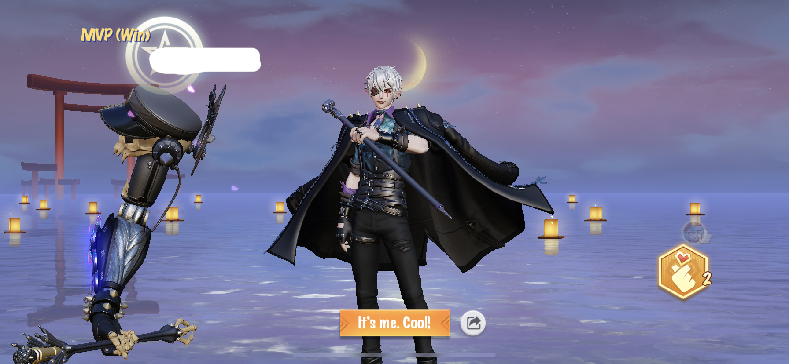
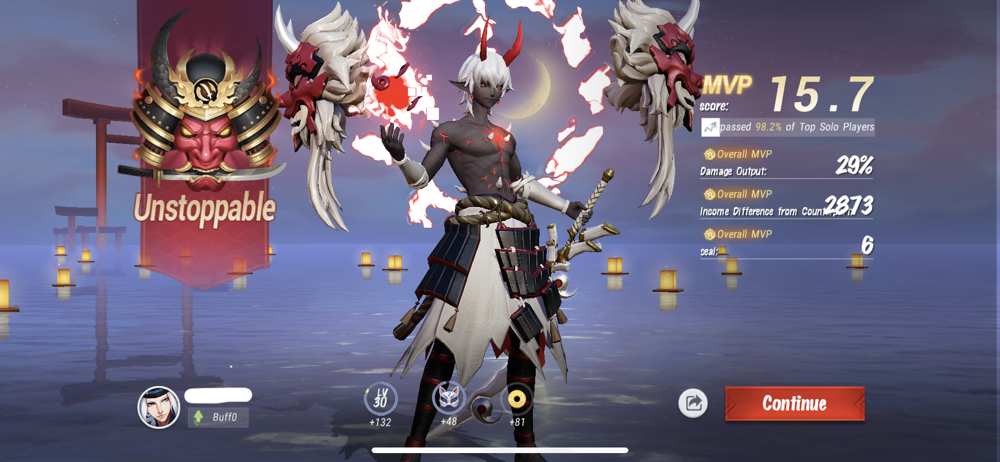
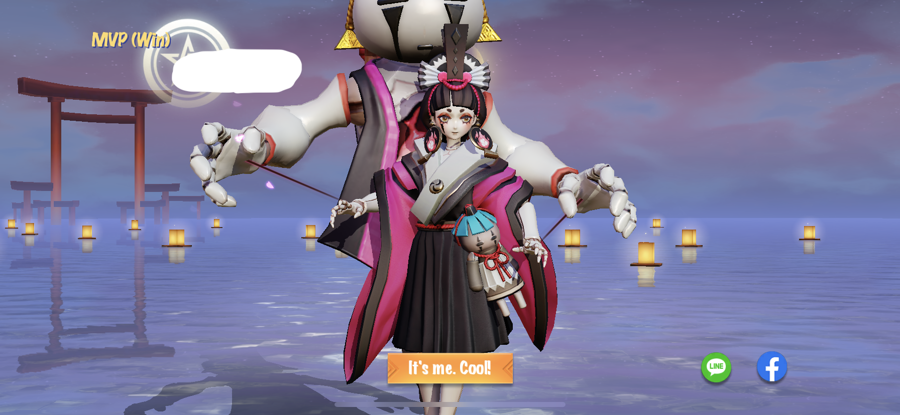

|
Trinh Xuan Trung
I am a student researcher, currently programming (mostly) in Python and C++.
My current research interests include Mathematics, algorithms and AI systems. One of the best parts of research is that I get to learn from all kinds of people, so please feel free to reach out if you want to chat or collaborate!
And, outside those, I love music. I’ve been studying the piano since around 5, and also love to research more deeply into classical (& jazz) music as well as improvising or composing.
Email: trung.trinhxuan27@gmail.com
Google Scholar /
Youtube /
Spotify
Zalo /
|
|
|
News
[Feb 2024] I started working on my first publication.
[Jan 2024] I started building my collaborating team of researchers.
[Dec 2023] I started writing on my blog site.
|
Publications, Service & Experience
just some (somewhat) capricious and random pieces of text.
(Work in progress...)
|
Other Projects
I've been working on some other projects, such as making videos for fun, learning to write articles in new foreign languages (中文, にほんご, Deutsch), and creating my own music. If you're interested in building off any of them, I highly welcome collaborations!
* Duolingo: I’ve been playing Duolingo for a while - Currently on ~300 (almost) days streak! 👀

And, I advanced to the Diamond league. 💪🔥

* Reading:
Trying my best to finish reading at least 1 book per month! 👀📚
* Gaming: I’ve found these games fun & addictive:
Wild Rift:

Among Us:

Onmyoji Arena:



PUBG
Music
Previously, I studied classical piano under the master pianists and pedagogues of Vietnam's National Academy of Music - Piano department, and gave several public performances.
|
|
Liszt
Trung Trinh
2024
I think I'm addicted to some of Liszt's pieces.
|
|
|
Mozart
Trung Trinh
2024
Pure genius.
|
Once in a while, I also enjoy creating my own music.
(Work in progress...)
|
|
{kind=link}